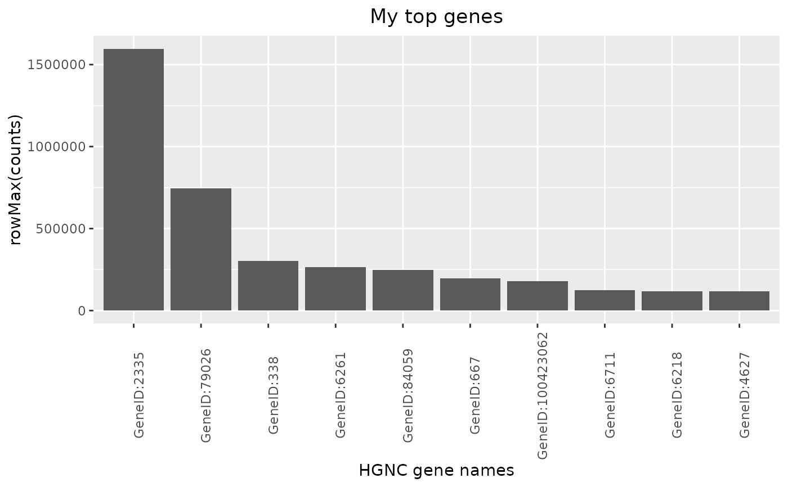

![[Experimental]](figures/lifecycle-experimental.svg)
top_genes() creates a HermesDataTopGenes object, which extends data.frame. It
contains two columns:
expression: containing the statistic values calculated bysummary_funacross columns.name: the gene names.
The corresponding autoplot() method then visualizes the result as a barplot.
Usage
top_genes(
object,
assay_name = "counts",
summary_fun = rowMeans,
n_top = if (is.null(min_threshold)) 10L else NULL,
min_threshold = NULL
)
# S4 method for class 'HermesDataTopGenes'
autoplot(
object,
x_lab = "HGNC gene names",
y_lab = paste0(object@summary_fun_name, "(", object@assay_name, ")"),
title = "Top most expressed genes"
)Arguments
- object
(
AnyHermedData)
input.- assay_name
(
string)
name of the assay to use for the sorting of genes.- summary_fun
(
function)
summary statistics function to apply across the samples in the assay resulting in a numeric vector with one value per gene.- n_top
(
countorNULL)
selection criteria based on number of entries.- min_threshold
(
numberorNULL)
selection criteria based on a minimum summary statistics threshold.- x_lab
(
string)
x-axis label.- y_lab
(
string)
y-axis label.- title
(
string)
plot title.
Details
The data frame is sorted in descending order of
expressionand only the top entries according to the selection criteria are included.Note that exactly one of the arguments
n_topandmin_thresholdmust be provided.
Functions
autoplot(HermesDataTopGenes): Creates a bar plot from a HermesDataTopGenes object, where the y axis shows the expression statistics for each of the top genes on the x-axis.
Examples
object <- hermes_data
# Default uses average of raw counts across samples to rank genes.
top_genes(object)
#> expression name
#> GeneID:2335 390085.60 GeneID:2335
#> GeneID:79026 302684.20 GeneID:79026
#> GeneID:4627 60247.10 GeneID:4627
#> GeneID:667 59502.90 GeneID:667
#> GeneID:26986 58479.75 GeneID:26986
#> GeneID:6218 57782.15 GeneID:6218
#> GeneID:6205 50484.85 GeneID:6205
#> GeneID:811 42460.70 GeneID:811
#> GeneID:23215 41407.95 GeneID:23215
#> GeneID:4035 35884.20 GeneID:4035
# Instead of showing top 10 genes, can also set a minimum threshold on average counts.
top_genes(object, n_top = NULL, min_threshold = 50000)
#> expression name
#> GeneID:2335 390085.60 GeneID:2335
#> GeneID:79026 302684.20 GeneID:79026
#> GeneID:4627 60247.10 GeneID:4627
#> GeneID:667 59502.90 GeneID:667
#> GeneID:26986 58479.75 GeneID:26986
#> GeneID:6218 57782.15 GeneID:6218
#> GeneID:6205 50484.85 GeneID:6205
# We can also use the maximum of raw counts across samples, by specifying a different
# summary statistics function.
result <- top_genes(object, summary_fun = rowMax)
# Finally we can produce barplots based on the results.
autoplot(result, title = "My top genes")

autoplot(result, y_lab = "Counts", title = "My top genes")